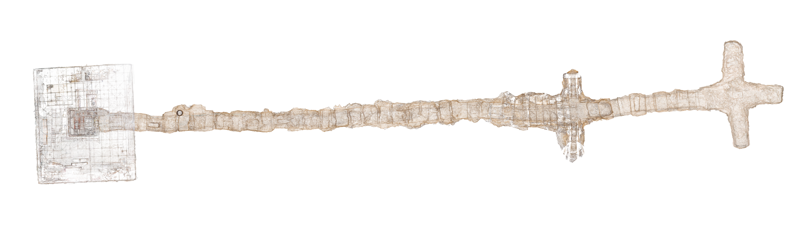
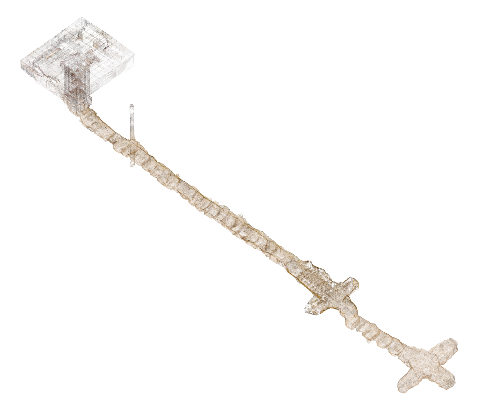
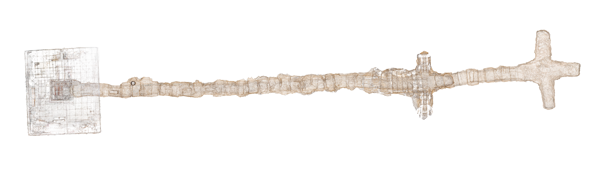
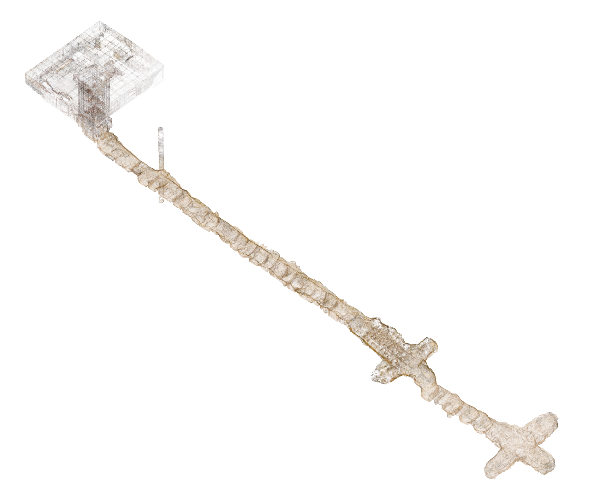
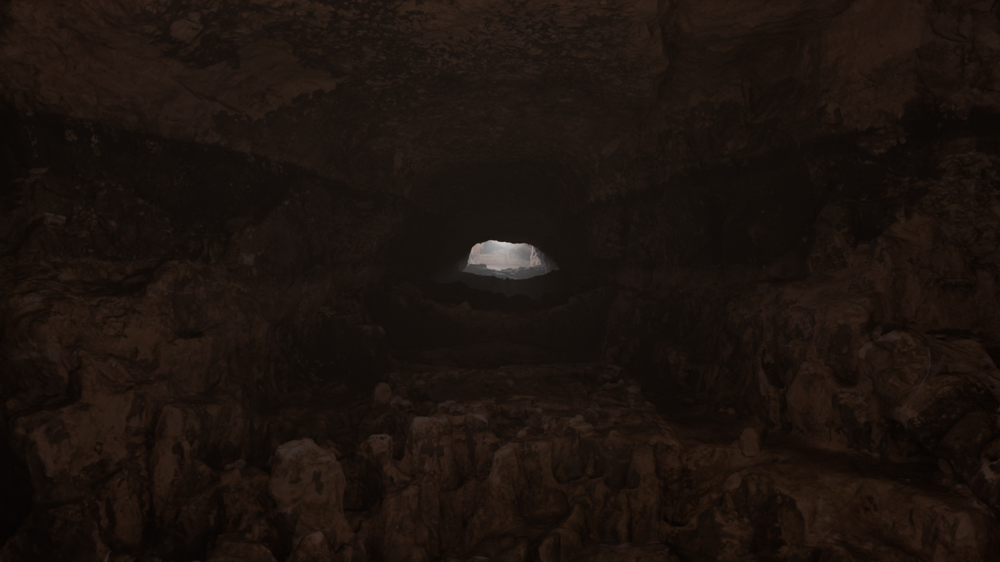
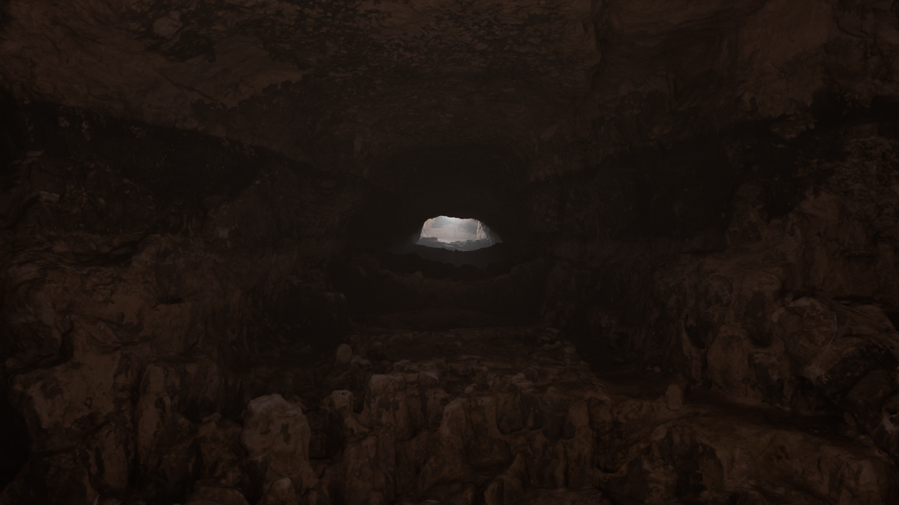

 

The Temple of the Feathered Serpent at Teotihuacan, Mexico, stands as one of the most iconic and enigmatic structures of ancient Mesoamerica. Dating back to around 200 CE, the temple is richly adorned with sculptural facades and steeped in cosmological and ritual significance. As part of a larger sacred complex within the Ciudadela, the temple represents both architectural brilliance and deep spiritual purpose.
In partnership with the Instituto Nacional de Antropología e Historia (INAH) and with the support of archaeologist Dr. Sergio Gómez, EIPC contributed to the documentation of a remarkable subterranean discovery: an ancient sealed tunnel running beneath the temple, which was accidentally uncovered in 2003 after a flooding event exposed structural vulnerabilities within the site. This tunnel, now known as Tlalocan: Path to the Underworld, had been intentionally closed more than a thousand years ago, preserving its contents in extraordinary condition.
EIPC’s digital scanning focused on the main axis of the tunnel, aligning with the apex of the temple above, and capturing spatial data from significant chambers where ritual deposits were unearthed—some dating from AD 125 to 534. These chambers contained over 300,000 artifacts, including sculptures, ceramics, and organic materials, many of which were preserved as intentional offerings during multiple ceremonial closures of the space.
Unlike surface reconstructions, this model emphasizes the ceremonial stratigraphy and spatial alignment between the subterranean architecture and the sacred geometry of the pyramid above. The scan invites viewers to understand how ancient Teotihuacanos engaged with cosmological depth, embedding meaning in both vertical and horizontal space. Through precise lidar mapping, the void becomes narrative—each layer of earth and artifact a testament to ritual, memory, and technological sophistication.
This project not only supports ongoing archaeological research but also offers students a unique opportunity to explore how digital technologies can preserve and reinterpret ancient architectural knowledge.